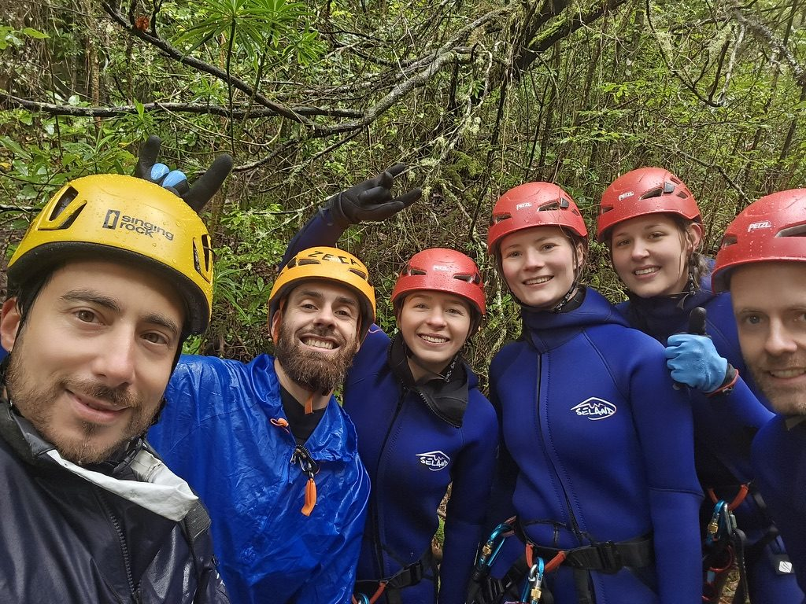
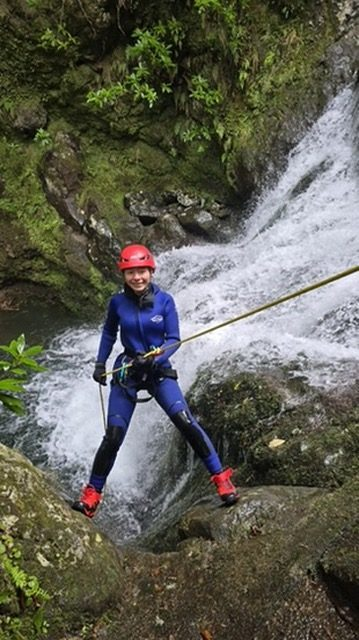
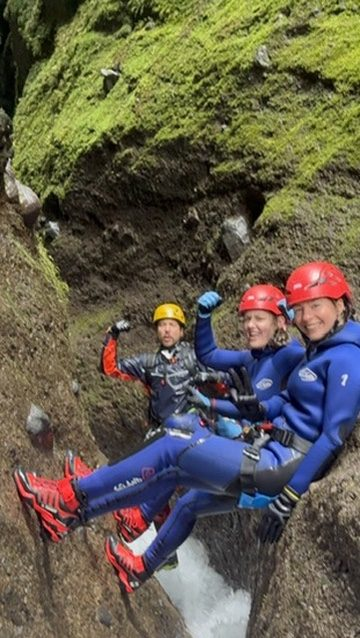
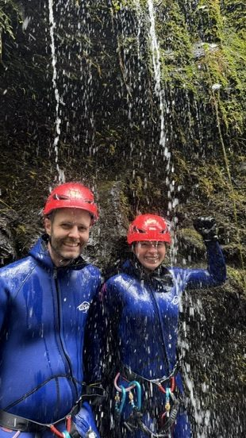
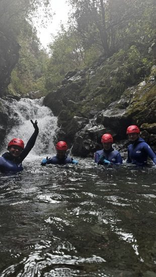
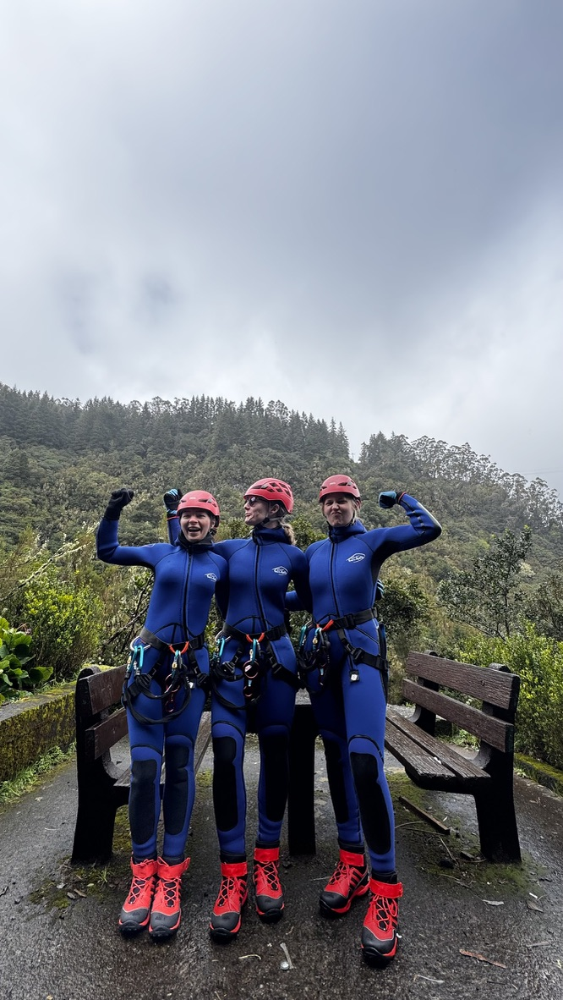
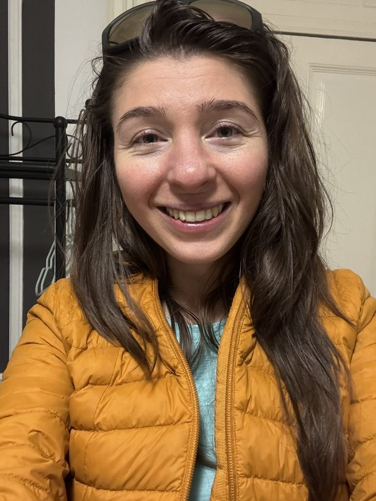

Madeira has a lot of waterfalls. This is not incidental — the island gets enormous amounts of rain, the terrain is dramatically vertical, and water finds its way down through every ravine and cliff face. There are waterfalls you pass on the road without stopping. There are waterfalls that are destinations in themselves.
Someone told me about waterfall rappelling. I had never heard of it. The idea is exactly what it sounds like: you rappel down the face of a waterfall, through it, with the water rushing over you the whole way.
I signed up immediately.

Go bold or go home. The only rule that applies here.
A note on being told you're fragile

My parents told me I was fragile. I never cared. It motivated me more.
I grew up being told I was fragile. Not in a cruel way — just in the way families sometimes wrap the careful ones in cotton wool because they care, and because worry looks like protection. I was told to be careful. To not take risks. To consider whether something was really necessary before doing it.
What that actually did was turn every physical challenge into a proof of something. Not a proof to anyone else — to myself. Every time I do something that my younger, cautious self would have said no to, I feel it as a small reclaiming. Waterfall rappelling in Madeira was one of those moments.
What it actually involves

The sequence: crawl. Walk. Hit a wall. Jump. Walk again. Rappel down. Repeat.
Waterfall rappelling is not just the rappel. That's what you sign up for, but what you get is an entire canyon experience — crawling through narrow rock passages, walking in the riverbed, jumping between ledges, squeezing through gaps that require you to trust that your body will fit. And then, yes, you rappel down the waterfall face. Several times.
You start in the forest, on the riverway. If it has been raining — and in Madeira it has almost always been raining somewhere — the water is already moving fast and loud before you reach the waterfall itself. The sound builds as you get closer. By the time you're at the top, looking down, the noise is total. Whatever you were thinking about before you got there is gone.

Feel the pressure of the water. Let it wake you up.
When you actually go down the face of the waterfall, the water hits you with real force — it pushes you against the rock, disrupts your balance, demands your full attention. You cannot be distracted. You cannot be anywhere else. Every step matters. This is, I think, part of why it works so well.
You feel, very precisely, like a warrior. I don't mean this in a dramatic way. I mean that when your entire attention is focused on your grip, your footing, and the water coming down on you with real power, you access a kind of calm that is very hard to find any other way.

Wake up to life with cold water. Instructions unclear. Did it anyway.
All but me

Strong, decided women. They all jumped. I was the one still standing on the ledge.
There was one jump — a ledge maybe four metres above a pool — where everyone in the group went without hesitating. One by one, they stepped to the edge and dropped. Strong, decided women, every single one of them. I watched from behind.
I was the last one standing on that ledge. The guide was patient. The group was patient. Nobody said anything. I stood there for maybe ninety seconds doing that exact negotiation with myself that I've done on the edge of a lot of things, and then I jumped.
The cold hit all at once. The pool was mountain water and it was serious about being cold. I came up laughing. I couldn't help it.
The smile

That smile. The one you can't manufacture and can't help.
When I got home I changed out of the wet clothes and stood in front of the bathroom mirror.
I had never seen myself smile like that. Not before or since. It was not a smile for a photo or a smile for someone else — it was just the face of a person who had done something and felt completely, entirely alive because of it.
I stood there for a while, just looking at it.
The island
Madeira is the kind of place that feels torn from somewhere else and set down in the Atlantic for no clear reason. Dramatic cliffs, volcanic black sand beaches, an interior that is dense and green and loud with water. The levadas — old irrigation channels turned hiking trails — run for hundreds of kilometres through terrain that looks like it belongs to a different planet.
I went in March the first time. Trails were closed from heavy rain. I went back in June. The weather was perfect every single day and I hiked until my legs couldn't go anymore and then hiked again the next morning.
It is an island of eternal spring, they say. After June I understood what that meant. After the waterfall I understood something else: that the best things you will do in a place are usually the ones you didn't plan and almost didn't do.
If someone offers you a waterfall: go down it.